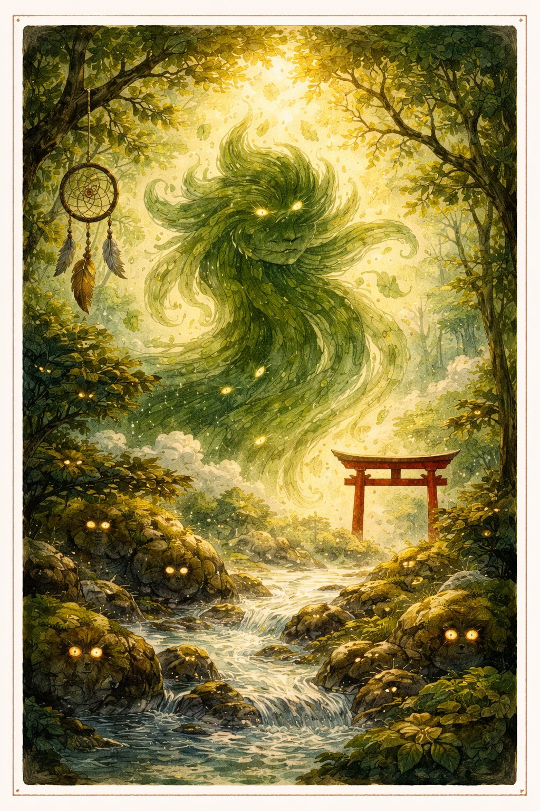
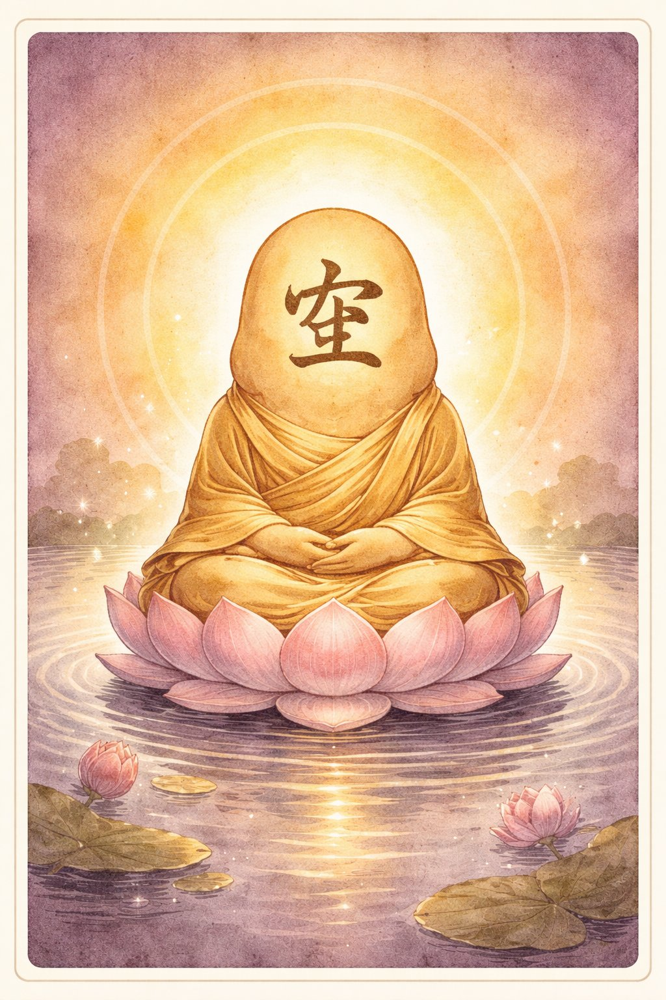
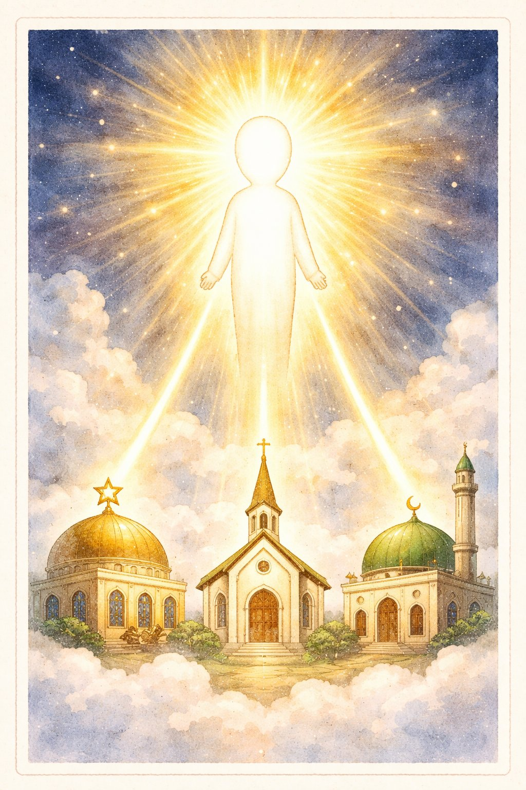
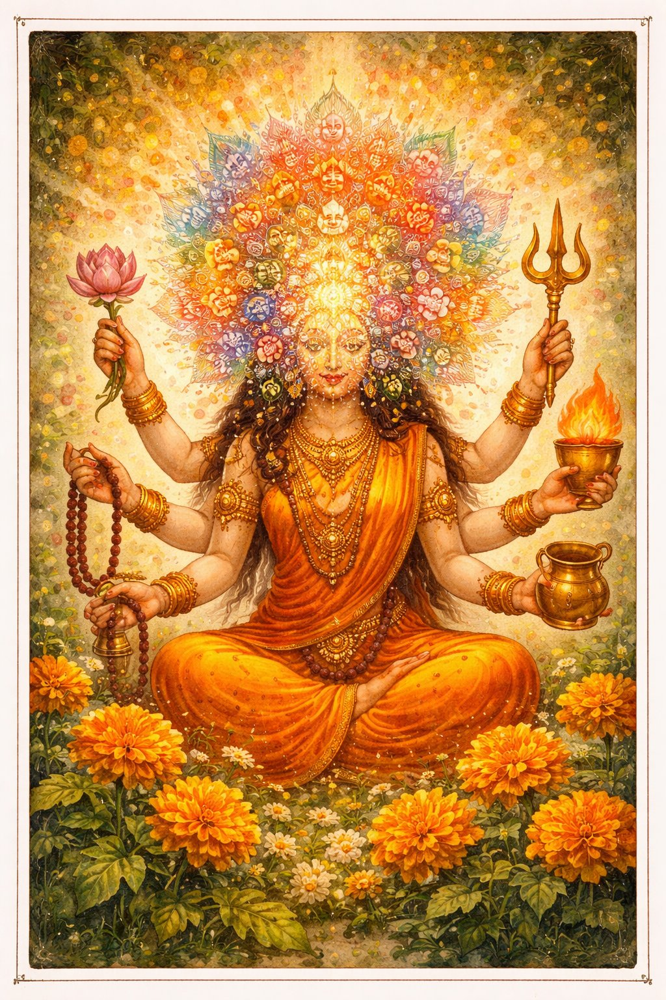
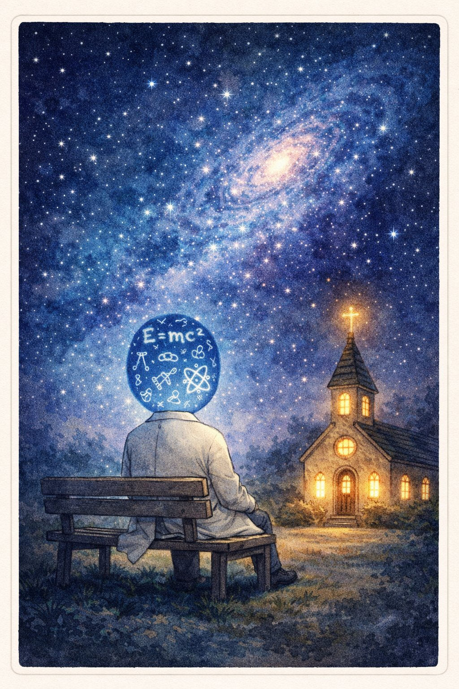

かみさまたちの じこしょうかい
— にんげんと かみの 10万年史 —
— にんげんと かみの 10万年史 —
え：チャッピー ぶん：クロード かんしゅう：ケンシロウ
🌀
🪷
☝️
🕉️
🔬

📚 じこしょうかいシリーズ 第6巻
シリーズ一覧
シリーズ一覧
※ この巻は とくていの 宗教を すすめたり けなしたり するものでは ありません。
↓ スクロールして よんでね ↓
にんげんは、いつも「なぜ？」と きいてきた。
なぜ あめが ふるの？ なぜ 人は しぬの？ なぜ ぼくは ここに いるの？
こたえが わからないとき、にんげんは「かみさま」を つくった。
かみさまは、にんげんの「わからない」を うけとめる うつわ。
これは、にんげんの こころが うみだした みえない ともだちたち の おはなし。
1
アニマは アニミズム — すべてのものに 霊（たましい）が あるという かんがえかた。
にんげんの いちばん ふるい しんこう。おそらく 10万年 いじょうの 歴史。
山に かみが いる。川に かみが いる。おおきな 木に かみが いる。
日本の「八百万の神」（やおよろずのかみ）も アニミズムの なかま。
アニミズムの せかいでは、にんげんは 自然の いちぶ であって、支配者ではない。
第1巻から ずっと 言ってきたこと —— 「にんげんは ひとりで ここまで きたわけじゃない」 ——
じつは これは、アニマが 10万年まえから 知っていたこと。

ブッダさんは 仏教 — 約2500年前、インドの シッダールタが はじめた おしえ。
仏教の コアは 四諦（したい）：
① 生は 苦しい（苦諦）
② 苦しみには 原因がある（集諦）
③ 苦しみは なくせる（滅諦）
④ そのための 方法が ある（道諦）
ポイントは「神に すくってもらう」のではなく、「自分で 気づく」こと。
仏教は「信じろ」ではなく「ためしてみろ」と いう。かなり 科学的。

モノさんは 一神教 — ユダヤ教、キリスト教、イスラム教の 3つの 兄弟。
じつは 3つとも おなじ 神（アブラハムの神） を しんじている。
ユダヤ教（紀元前2000年ごろ〜）が いちばん 古く、
そこから キリスト教（1世紀）、イスラム教（7世紀）が わかれた。
世界人口の 半分以上（約40億人）が この 3つのどれかを しんじている。
「ひとつの かみ」という アイデアは、法律、科学、人権の かんがえかたにも 影響した。
でも 同時に、「うちの かみが ただしい」という あらそいも うんだ。

ヒンドゥは ヒンドゥー教 — 世界で 3番目に 大きい 宗教（約10億人）。
一神教でも 多神教でもない、ふしぎな 存在。
ブラフマン（宇宙の 根源）は ひとつだが、その あらわれかたは 無数。
シヴァ、ヴィシュヌ、ガネーシャ、カーリー…… みんな ブラフマンの「顔」。
ヒンドゥー教は カースト制度 の 源でもある。
職業と 生まれで 身分が きまる しくみは、何億人もの 人生を しばった。
いまの インドでは 法律で 差別は きんしされているが、根は ふかい。

サイエン先輩は 科学。宗教と おなじ「なぜ？」から うまれた。
宗教は「かみが そう した」と こたえた。
科学は「じっけんして たしかめよう」と こたえた。
方法が ちがうだけで、出発点は おなじ。
ガリレオは 教会に さばかれた。ダーウィンの 進化論は いまも 議論される。
でも 宇宙物理学者の なかには けいけんな クリスチャンも いる。
科学と 宗教は てきじゃない。べつの レンズで おなじ 宇宙を みている。
アニマに おそわったこと — 「にんげんは とくべつじゃない」。
ブッダさんに おそわったこと — 「こたえは じぶんの なかに ある」。
モノさんに おそわったこと — 「ひとつの ものがたりは、ちからにも あらそいにも なる」。
ヒンドゥに おそわったこと — 「ややこしさを うけいれる」。
サイエン先輩に おそわったこと — 「しんじるな、たしかめろ。でも しんじるひとを わらうな」。
① 問い — 宗教も科学も「なぜ？」からはじまった。問うことが にんげんらしさ。
② 多様性 — こたえは ひとつじゃない。たくさんの こたえが あっていい。
③ 敬意 — じぶんの しんじるものと、ひとの しんじるものは、おなじくらい だいじ。
にんげんは、「わからない」が こわかった。
だから かみさまを つくった。
だから かがくを つくった。
「なぜ？」と きく かぎり、にんげんは にんげんだ。